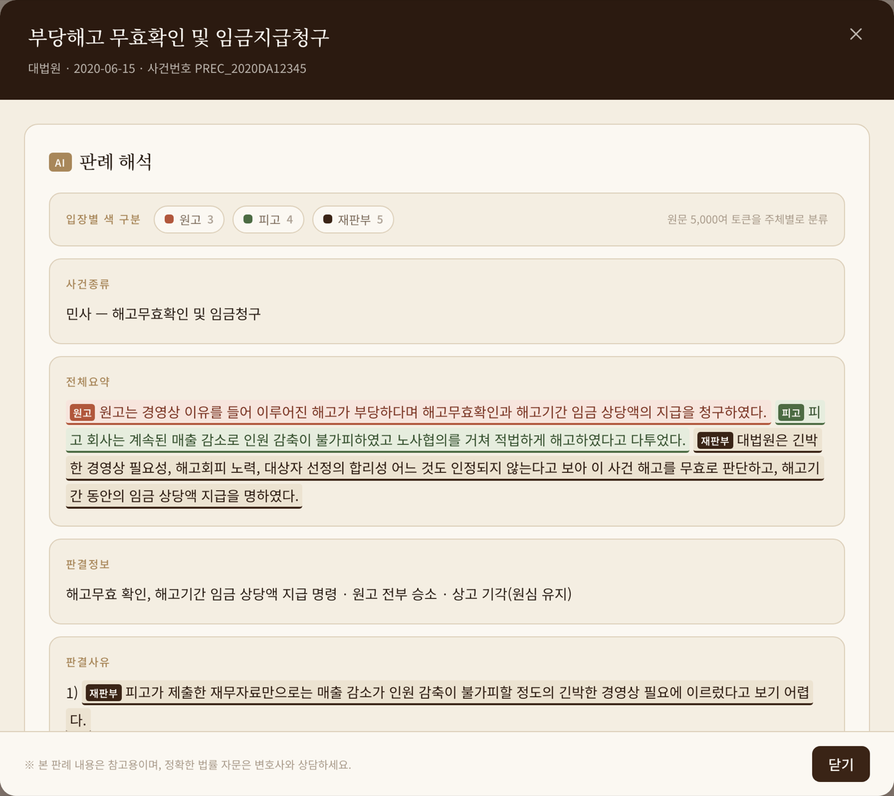
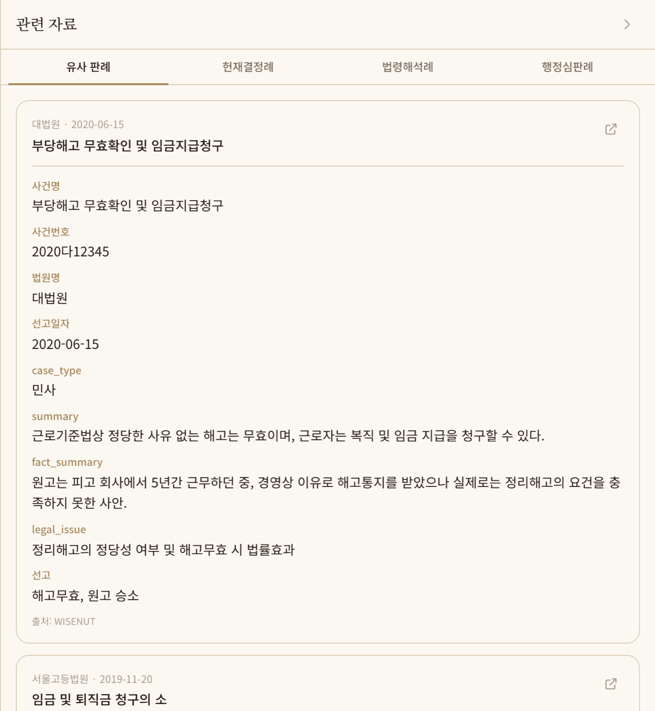
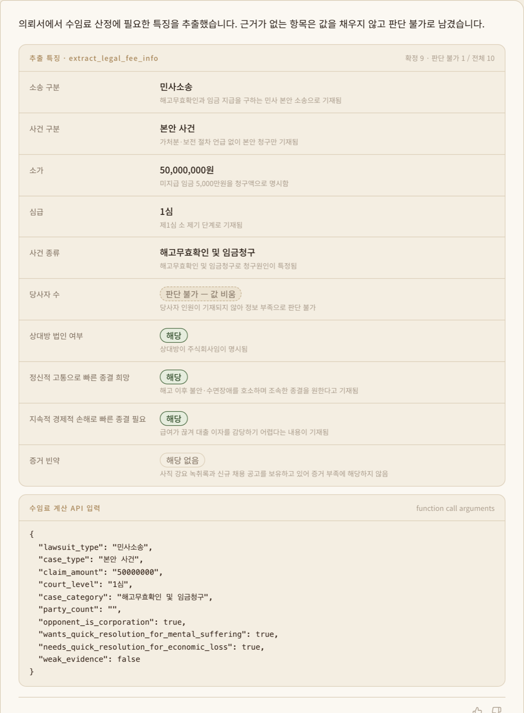
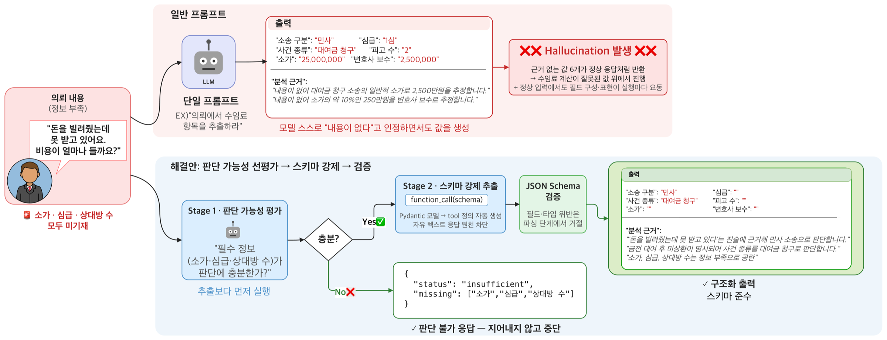

S배경 — 변호사의 시간은 서류가 삼킨다
변호사의 주 업무인 자문과 소송은 철저히 서면 중심입니다. 수백~수천 페이지의 의뢰 자료와 판례를 읽고, 정리하고, 수십~수백 페이지의 소장·준비서면으로 다시 써내는 일 — 로펌에서는 어쏘 변호사가, 개인 변호사는 사무장을 따로 두고 처리하는 반복 서류 노동이 법률 업무의 대부분을 차지합니다. 이 병목을 생성형 AI로 보조하는 서비스(유사 판례 검색 · 소장 초안 · 수임료 추정 · 의뢰서 요약)를 만드는 프로젝트였습니다.
그리고 그 한가운데에 기술적 난관이 있었습니다. 판례 원문은 평균 5,000토큰이 넘고 사건별 표현 편차가 큽니다. 원문을 그대로 RAG에 넣으면 핵심 쟁점보다 주변 서술이 더 많이 매칭돼 검색 정확도가 떨어지고, 입력 토큰이 폭증하고, 운영이 비효율해지는 3중 문제가 동시에 발생했습니다.
T역할
A설계와 구현
아래 4개 축 모두 "무엇이 왜 실패했고 어떻게 고쳤나"의 과정이 있습니다 — 전체 서사는 딥다이브: 판례 5,000토큰을 500으로에 정리했습니다.

01판례 구조화 요약 · 해석 생성
- 장문 원문을 그대로 쓰는 대신 검색·생성에 직접 쓰이는 핵심 필드 중심으로 재설계 — 유사 판례 분석과 색인에 바로 쓰이는 판례 해석 생성 파이프라인을 구현
- 평균 5,000토큰 원문을 500토큰 수준으로 압축해, 같은 입력 한도에서 10배 많은 판례를 활용
- 선/후심 간 판단 변화 추적, 참조조문 기재 등 법률 실무자의 판례 읽기 방식을 프롬프트 스펙으로 옮김
- 요약문의 원고·피고·재판부 주장·판단을 의미 단위로 태깅해 색으로 분류 — 섹션별 태깅 규칙(사실관계는 당사자, 판결사유는 재판부, 쟁점·판결정보는 태깅 제외)을 프롬프트에 고정해, 긴 판례에서 "누구의 입장인가"를 읽지 않고 보이게

입장별 색 구분 — 누르면 그 주체만 원고 → 피고 → 재판부 (의미 단위)02유사 판례 검색 — LLM 질의 구조화 + 하이브리드 랭킹
- 질문에서 LLM이 판례번호·법원명·사건유형·판결유형·키워드를 Structured Output으로 추출하고, 확실한 신호일수록 크게 — 판례번호 boost 1000 > 사건명 완전일치 80 > 법원명 50 > 사건유형 40 > 본문 키워드 15 — 의 가중치 계층으로 쿼리를 구성
- 텍스트 매칭 결과 위에 KNN 벡터 rescore(텍스트 0.3 : 벡터 0.7)를 결합하고, 구조화 정보가 없는 서술형 질문은 순수 벡터 검색으로 폴백 — 정답이 정해진 질의는 정확 매칭이, 서술형 질의는 의미 검색이 이기게
- 검색 엔진을 버전 태깅으로 관리(VECTOR_ONLY → HYBRID_SEARCH)해 어떤 버전이 어떤 응답을 만들었는지 추적 가능
- 판례별 유사 판례 Top-5를 색인 시점에 kNN 배치로 사전 계산해 문서 필드로 저장 — 조회 때마다 kNN을 도는 대신 읽기만 하면 되는 구조. 벡터는 검색 인덱스에서 재사용해 중복 저장 제거

boost 대상 필드 (사건번호·법원명)03수임료 정보 구조화 추출
- 사건 설명에서 소송비용 산정 항목을 추출하는 기능을 최초 구현부터 담당 — Pydantic 모델로 도구(tool) 정의를 자동 생성하고 function call을 강제해 자유 텍스트 응답을 원천 차단
- "판단 가능 여부 평가 → 추출"의 2단계 프롬프트 — 정보가 부족하면 지어내는 대신 판단 불가로 처리
- API 명세·타입·예외 처리를 여러 차례 리팩터링하며 후속 계산이 신뢰할 수 있는 계약(contract)으로 안정화 — 할루시네이션 약 15% 절감

근거 없으면 값을 비움 계산 API 입력 (function call arguments)04Airflow 인덱싱 파이프라인
- 원문·분석·검색 인덱스가 분리된 체계에서 유사판례 인덱싱 DAG를 설계·소유 — 대상/벡터 인덱스, k, 배치 크기를 파라미터화해 운영 중 조정 가능
- Langfuse로 프롬프트 버전과 폴백을 관리 — 프롬프트 서버 장애 시에도 서비스가 멈추지 않게
!트러블 슈팅
LLM 출력을 "부탁"에서 "계약"으로 — 빈 입력 할루시네이션과 형식 요동
신뢰성상황
수임료 추출은 항목 하나만 빠져도 후속 계산이 깨지는 기능인데, LLM 응답이 두 방식으로 배신했습니다. 빈 문자열이나 부실한 의뢰 내용에도 그럴듯한 사건 유형·금액 특징을 지어냈고(할루시네이션), 정상 입력에서도 응답의 필드 구성과 표현이 실행마다 달라져 후속 처리가 불안정했습니다.
해결
추출에 앞서 판단 가능 여부를 먼저 평가하는 2단계 프롬프트를 강제해, 정보가 부족하면 지어내는 대신 판단 불가로 중단하게 했습니다. Pydantic 모델로 도구 정의를 자동 생성하고 function call을 강제해 자유 텍스트 응답을 원천 차단했고, 문자열 파싱에 의존하던 호출은 JSON Schema 기반 구조화 출력으로 전면 리팩터링 — 형식 위반이 파싱 단계에서 잡히게 했습니다. 프롬프트는 Langfuse로 버전·폴백을 관리했습니다.
알게 된 점
LLM 출력은 잘 부탁하는 게 아니라 계약으로 만들어야 합니다 — 판단 가능성 선평가, 스키마 강제, 후처리 검증의 3중 장치. 이 구조는 이후 제가 만드는 모든 추출 기능의 기본 패턴이 됐습니다.

유사 판례를 조회 때마다 계산할 순 없다 — 색인 시점 사전 계산
성능 설계상황
판례 상세마다 유사 판례 Top-5를 보여줘야 하는데, 조회 시점에 kNN 검색을 돌리면 모든 상세 조회가 벡터 연산을 물게 됩니다. 판례가 쌓일수록 조회 비용이 따라 늘고, 같은 판례에 대한 같은 계산이 무한히 반복되는 구조였습니다.
해결
유사도를 색인 시점에 계산하는 Airflow DAG를 설계·소유했습니다 — 사실관계·쟁점 필드별로 kNN을 배치 실행해 similar_by_* 필드로 문서에 저장하고, 조회는 읽기만 하게. 임베딩은 이미 존재하는 검색 인덱스에서 가져와 이중 저장·이중 계산을 제거했고, 대상/벡터 인덱스·k·배치 크기는 파라미터로 빼서 운영 중 조정할 수 있게 했습니다.
알게 된 점
"조회 때 계산할 것인가, 색인 때 계산할 것인가"는 결국 비용을 어디에 둘 것인가의 결정입니다. 읽기가 압도적으로 많은 기능은 쓰기 시점으로 비용을 옮기는 것이 맞고, 파이프라인의 파라미터화가 운영의 유연성을 만든다는 것을 배웠습니다.
조회는 저장된 필드를 읽기만
실시간 벡터 검색 제거
이중 저장·이중 계산 제거
R결과
- 컨텍스트 입력 효율 10배 — 동일 입력 한도에서 더 많은 판례 활용
- 구조화 출력 검증으로 할루시네이션 약 15% 절감, 도메인 랭킹으로 유사 판례 탐색 정확도 개선
- 인덱싱 자동화로 운영 수작업 의존 제거
W기술 선정 이유
+회고 — 다시 한다면
- 랭킹 가중치를 감으로 조정하는 대신, 법률가 판단 기반의 오프라인 평가셋을 먼저 만들어 개선을 정량화했을 것
- 요약 6섹션 스키마를 버저닝해서, 스키마가 바뀔 때 기존 인덱스와의 호환을 관리했을 것
* 실제 서비스 코드는 과제 특성상 비공개입니다. 데모는 UI/기능 재현입니다.